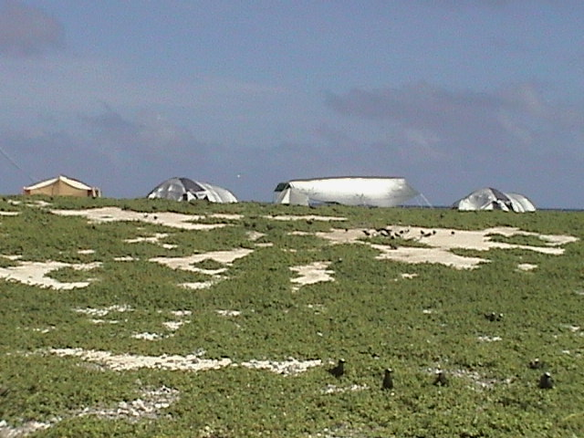
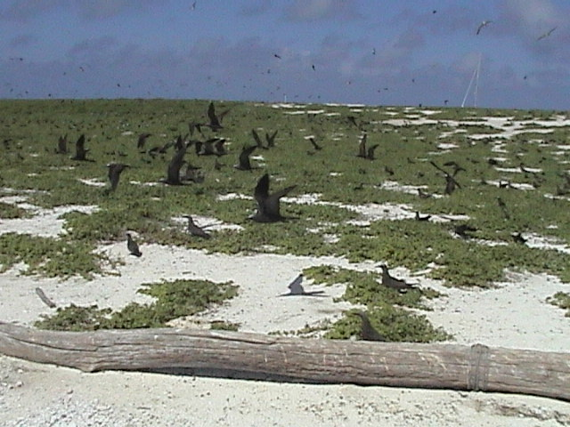

話題の局・QSL
VK9ML・Mellish Reef

VK9MLを運用するJH7OHF・小野さん(左)と6mのアンテナ


|
◎ VK9ML(Mellish Reef)の最終結果= 2002年4月15日から4月25日まで運用したVK9ML(Mellish Reef)。このDX-pediにはJAからもJH7OHF、JJ1LIB、JP1TRJの3局が参加した。 メンバーの一人JH7OHF・小野さんの報告によると、VK9MLでの6mのQSO数は4,334(Dupeを含む)、24エンティティーだった。 JAは毎日オープンしており、運用後半になってから中米のTI(Costa Rica)が毎日3-4時間入感。 北米とのQSOはW6だけで、期間中の特筆するオープンはロングパスで一回だけ入感したPY5CC、PY2XBだったと。 他に入感してQSO出来なかったのはDU、9M6CT、XV3AAなど。 Band QSO's CW SSB RTTY AM --------------------------------------------------------- 1.8 564 562 2 3.5 1535 1151 384 7.0 3678 3192 486 10.1 2989 2989 14.0 9048 3580 4812 656 18.0 6268 2770 3498 21.0 9684 4393 4667 624 24.9 5908 3027 2881 28 6946 3125 3728 93 50 4334 1469 2632 146 87 --------------------------------------------------------- Totals 50954 26258 22218 1519 87 (資料・JH7OHF) |